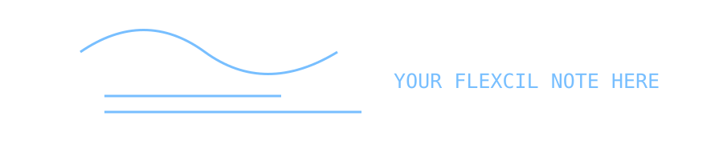

정사각행렬 A에 대해 AB = BA = I를 만족하는 행렬 B가 존재하면, B를 A의 역행렬이라고 합니다.
AA⁻¹ = A⁻¹A = I
02 / 직접 필기 삽입
아래는 필기 이미지를 삽입할 자리입니다.

// 실제 Flexcil WebP 이미지로 교체하세요.
# Markdown으로 필기하기
## 제목과 강조
일반 문장에 **굵게**, *기울임*, `인라인 코드`를 사용할 수 있어요.
- 첫 번째 핵심 개념
- 두 번째 핵심 개념
### 수식
`Ax = b`
### 코드
```python
print("Hello, StudyArchive!")
```
### 필기 이미지

### HTML 직접 꾸미기
Markdown 본문 안에 HTML도 넣을 수 있어요.
내가 원하는 크기와 색상
01 / 연결 리스트
각 노드가 데이터와 다음 노드에 대한 참조를 저장하는 자료구조입니다.
HEAD → [DATA | NEXT] → [DATA | NEXT] → NULL
02 / 시간복잡도
노드 위치를 이미 알고 있다면 연결 변경은 O(1)이지만, 그 노드를 탐색하는 데는 O(n)이 걸릴 수 있습니다.
STACK / LIFO
가장 마지막에 들어온 항목이 가장 먼저 나갑니다.
QUEUE / FIFO
가장 먼저 들어온 항목이 가장 먼저 나갑니다.
01 / 명제
참 또는 거짓으로 판단할 수 있는 문장을 명제라고 합니다.
P → Q ≡ ¬P ∨ Q
01 / 클래스
클래스는 객체의 상태와 동작을 정의합니다.
class Student:
def __init__(self, name):
self.name = name
s = Student("Hello")
print(s.name)
01 / 슬라이싱
다음 코드는 모든 행에서 첫 번째 열만 가져옵니다.
import numpy as np
a = np.array([[1,2],[3,4]])
print(a[:, 0]) # [1 3]
01 / KNN
새로운 샘플과 가까운 K개의 이웃을 참고하여 예측하는 알고리즘입니다.
from sklearn.neighbors import KNeighborsClassifier
model = KNeighborsClassifier(n_neighbors=5)
model.fit(train_input, train_target)
01 / Git
Git은 분산 버전 관리 시스템입니다.
02 / 자주 쓰는 명령어
git status
git add .
git commit -m "Add notes"
git push origin main
WELCOME
공부한 내용을 기록하고 다시 찾기 위한 개인 아카이브입니다. 이 페이지를 자유롭게 수정하세요.